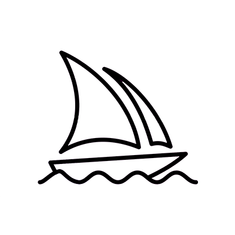
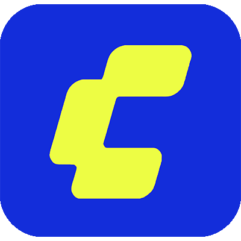

Smuggler's Outpost
ProjectSet in a Dune-inspired universe, this project explores AI as an ideation partner in environment design. Used SDXL to iterate a desert hideout concept, taking the final image as a foundation for 3D modelling in Blender.
DESIGN & MUSIC // Oxford Brookes Alum
Adaptable designer blending technical skills with operational reliability. Specialising in generative design workflows, audio-reactive visual systems and digital practice.
Set in a Dune-inspired universe, this project explores AI as an ideation partner in environment design. Used SDXL to iterate a desert hideout concept, taking the final image as a foundation for 3D modelling in Blender.
Bridging the gap between sound and spatial volume, this project manipulates environmental parameters in real-time. Audio frequencies dictate geometry formation and scaling within TouchDesigner, fed into a 3D gallery.
This series of short video experiments explores generative design as a tool for cinematic world-building and atmosphere. Using Midjourney's video generation capabilities, the goal was to create highly textured, loopable short ruins.
The purpose of this experiment was to test the fidelity and material realism of the HiDream diffusion model using ComfyUI. The core objective was to build a tailored local pipeline capable of rendering intricate, organic structures.
// Generative Design
I believe AI should be treated as a collaborator to enhance and improve elements of the design process, from concepting ideas to refining outcomes, rather than as a competitor within the design industry. Since 2022, I have been experimenting with various use cases across my projects, using everything from direct video and image generation to local ControlNet pipelines and AI-assisted web design.
Whilst there are clear pitfalls in the ethics and regulations behind generative models being trained on artwork without the consent of human artists, the rate at which AI technology and tools are developing is crazy, and I am optimistic that truly innovative AI applications will benefit the industry.






Generating high-quality concept art, storyboards for videos and detailed textures for design projects.
// vnon
I have been making music on and off as a hobby since 2020, using it as a vital creative outlet. From the beginning, I found myself gravitating towards Liquid Drum & Bass, drawn by the sheer diversity of DnB as a genre, which has kept my focus ever since.
My workflow relies heavily on sampling from other tracks and moulding them to fit my signature sound. I see working with samples as akin to collaging, a tactile, layered art form I loved experimenting with during the early stages of my visual arts practice.
Interested in collaborating or have a project in mind? I’d love to hear about it. Get in touch and let’s make something together.
EMAIL_ADDRESS
wvernoncsi@gmail.comLINKS
// SOCIAL
// MUSIC